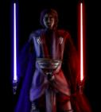

Forums galactiques > Assemblée Galactique : diplomatie officielle > RP Thypheros
Pages : 1 2
| Thypheros Respect diplomatique : 173  19/04 ETU 15:53 | Score : 4 Détails Thyphera,centre ville.
La terre trembla,puis une fisssure apparu. Un gigantesque canon surgit.Il était entouré d'un dome-bouclier laissant juste apparaitre son canon. La flotte de kalich surgissait à l'instant même de l'hyperespace. Dans le centre de controle du canon,des pirates et des rebelles Thypherans organisaient le prochain tir. Un homme de haute taille controlait l'opération. Il était aussi connu que mystérieux,son gout pour le massacre n'avait aucun égale.Il semait la terreur dans toutes la galaxie. Cet homme était Djes Sorub,le plus infame tueur que la galaxie est connu. Regardant à travers le dôme,il voyait des Thyphériens stupéfaits regardaient l'immense arme. "Monsieur." Djes se retourna vers son officier. "Oui. -Le canon est prêt à tirer,nous avons 3 cibles. -Lesquelles? -La tour Thyphérienne sur cette planète même,la station spatial Machina et une flotte inconnue venant d'entrer dans notre espace. -Ne prenons pas de risques,tirait sur la flotte." Il se tourna vers une prisonnière qui n'était d'autre que Sabrina. "Dommage,nous étions là en même temps.Vous allez pouvoir observer la puissance de frappe des rebelles.(Il dit à son officier.)Lancez le compte à rebours! -Mise à feu du canon dans 10,9,8,7,6,5,4,3,2,1,FEU!" Un tir percuta la flotte de kalich,faisant d'inombrable dégâts. | ||
| Ace Azzamen Respect diplomatique : 1199  20/04 ETU 20:38 | Score : 3 Détails "Yeah, ça a marché ! Ils ont mordu à l'hameçon."
"T'avais raison de penser que les communications étaient piratées, Cobs" "Facile, une double ligne a bande passante multiple et un faisceau holo à calibre ternaire séquentiel reliés à un capteur sonique ne peuvent être que du matériel trafiqué pour espionnage." ///// Après l'éclair aveuglant qui avait anéanti la flotte leurre de Kalich plus d'autres vaisseaux réels, eux, des chasseurs fendirent l'air. ///// ¤¤¤¤¤ intérieur du centre de tir du canon ¤¤¤¤¤ "Capitaine, norte tir a été un succès mais il y a un problème." "Enseigne Golpit au rapport, brailla l'officier." " Le tir a percuté la flotte de kalich de plein fouet ..." "Mais ..." Dit-il avec un regard menaçant. "Il y a trop peu de débris. Nous avons probablement tiré sur des leurres. "IMBECILES ! MAINTENANT NOTRE POSITION EST DECOUVERTE ! DETRUISEZ IMMEDIATEMENT LE MACHINA PLAZA ! Mais quezskzscrricht ..." "Nos communications sont brouillées, Capitaine ! Ils arrivent." "Faites décoller les chasseurs des Forces de Sécurité." ///// Quarante chasseurs décollèrent de la base Thypheran. Kalich passa sur une fréquance protégée des Ex Machina. ///// "Seigneur de la Guerre aux Red Hunters, autorisation de tirer sur les chasseurs Thypherans rebelles à vue. Code 2.2-6. Red 9 !" "Rapport !" "Reste en arrière et scanne régulièrement les Thypherans, pour éviter de shooter des amis de Thyph." "Ce sera fait." "Ace et Cobs ?" "On s'occupe du canon !" Répondirent-ils ///// L'EVOCHRON, l'aile-X noire et le N-1 enclenchèrent leurs réacteurs à pleine puissance et traversèrent sans encombre les lignes thypherans grâce à l'appui précis des Red Hunters et s'approchèrent du lieu où se terrait cette arme diabolique. ///// "Cible à douze heures. Cent klicks. Aucun turbolaser de défense" Dit Cobs. "Par contre, il y a ça !" Dit Ace "Putain ! Comment ils ont trouvé un CLA modifié ? se demanda Kalich. Ace ?" "Tactique habituelle." ///// Un double clic dans le système de communication indiqua que ses amis avaient pris bonne note. Les chasseurs se mirent en file indienne et cobs fonça droit vers le croiseur à une vitesse vertigineuse. Ses manoeuvres incroyables empêchèrent les cannoniers de l'aligner. Il s'approcha des générateurs de bouclier et largua deux torpilles qui allèrent les pulvériser dans une explosion titanesque. Cette déflagration aveugla les artilleurs qui ne virent pas venir les bombes spatiales de Ace et de Kalich qui virent s'écraser simultanément sur la passerelle principale et la passerelle auxilière, coupant le vaisseau de tout contrôle. Le CLA modifié entama un plongeon sur Thyphera et s'écrasa au sol. ///// "Une bonne chose de faite" dit Cobs "Maintenant, à l'assaut !" répondit Kalich "A votre avis, à quoi s'attendent-ils le moins ?" demanda Ace ///// Etrangement, aucune réponse ne lui parvint. Les chasseurs formèrent une ligne parfaite et foncèrent directement vers la passerelle du Canon Ils tirèrent des rafales de laser qui opacifièrent la vitre puis cobs lança une torpille qui la fit voler en éclat. ///// "Capitaine, ... Nous perdons de l'atmo... que fair... ?" ////// Le capitaine appuya sur un bouton rouge pendant que tout autour de lui, des feuilles volaient et des hommes s'accrochaient désespérément à leur siège. Aussitôt, un volet métallique s'abaissa, pressurisant à nouveau la passerelle. Lorsqu'il se releva, il vit avec horreur Ace, Cobs et Kalich, debouts, les armes à la main avec un sourire maléfique. Kalich mit en route sa sulfateuse rotative, cobs dégaina ses deux blasters de poing tandis qu'Ace fit de même avec son blaster d'assaut. Sans un mot, ils ouvrirent le feu, tirant à travers toute la salle. Ne tirant jamais dans la tête d'un officier mais occasionnant des blessures mortelles. Les officiers agonisèrent pendant une quinzaine de minutes puis un silence total se fit. Ils disposèrent des charges explosives aux points clés de la passerelle et se frayèrent un chemin jusqu'au réacteur central qu'ils sabotèrent également. Cobs se connecta à un terminal et téléchargea un virus destructeur qui infecterait quinconque souhairait récupérer les données techniques du canon qu'il endommagea également de manière irrémédiable, rendant impossible toute nouvelle construction d'une telle arme. Un vrombissement aigu se fit entendre. ///// " Ils vont se remettre à tirer, dit Ace, On a intérêt à dégager !" "Allez ! Au hangar ! Vite !" ////// Ils coururent dans les couloirs du canon, descendant les rebelles thypherans qui avaient la malchance de croiser leur chemin. Ils arrivèrent dans l'hangar où leurs vaisseaux les attendait et où se trouvaient un tas de corps bleuïs par une asphyxie brutale. ////// " Je te l'avais dit: en sautant directement dans la passerelle et en envoyant les vaisseaux dans le hangar, qu'on les surprendrait. "Pas le temps de traîner" dit Kalich ///// Ils sautèrent dans leurs cockpits et décollèrent. Ils rejoignirent très vite les Red Hunters. Le canon tenta à nouveau de faire feu mais une série d'explosions internes se produisit. Au moment où le fût sembla lâcher son projectile, une explosion dantesque survint, ravageant tout sur des klicks à la ronde. Les Fondateurs eurent le sentiment du devoir accompli mais ne sourirent même pas. Ils rejoignirent la Griffe de Kalich et se posèrent dans le hangar de l'HORRIBILIS. ///// | ||
| Thypheros Respect diplomatique : 173 21/04 ETU 15:53 | Score : 3 Détails Un homme ensanglanté sortit des débris fumants du canon.
Dans les parties de sa chair arrachée on pouvait voir des morceaux de métal. Il regarda le ciel ou la flotte des Ex Machina était toujours là. "Je vous maudis tous les 3.Moi,Djes Sorub,je prendrai ma revanche!" Puis il disparut comme par magie. ***Dans le sous sol de la tour Thyphérienne.*** Le commandant Bror Amalsy était devant une porte de fer inviolable. Un scientifique lui ouvra.La salle était plongé dans l'obscurité et il ne vit que les boutons lumineux et 10 cylindres remplis d'un liquide bleu marine. Des corps flottaient à l'intérieur. Bror était stupéfait et il regarda le savant. "Qu'est ce que c'est que ça? -Vous avez devant vous le centre de clonage que Thypheros avait fait construire avant sa mort.Il n'a pas préscisé dans quel but mais il voulait que l'on fasse des recherches. -Attendez est ce possible de.. -Cloner Thypheros,oui certainnement.Nous avons son ADN mais nous ne voulons pas d'un clone idiot.En fait il faudrait "capturer" l'esprit de Thypheros. -Vous voulez le faire résuciter? -On peut dire ça comme ça. -Comment allez vous faire pour l'esprit? -Son esprit pourrait être retransmis à partir d'un simple souvenir." Il eut un long silence. "Je veux bien essayer,que dois je faire. -Installer vous dans le siège.Voila.Maintenant pensez à un souvenir ou était présent Thypheros,le plus précis possible." Les instruments s'affolèrent brutalement et une jauge commença à monter devant l'ordinateur centrale. "Superbe,si ça marche,nous aurons vaincus la mort une fois pour toute! -Occupez vous de Thypheros,je ne demande que ça." le liquide d'un des tubes fut brutalement environné de lumière..... | ||
| Thypheros Respect diplomatique : 173 08/05 ETU 16:25 | Score : 2 Détails 2 mois plus tard,vaisseau mère "Starlight".
Un homme encapuchoné entra dans la salle de contrôle. Un des deux gardes présents lui demanda son identitée. Pour toute réponse il fut découper à la gorge par une vibrolame. Le second garde effleura son pistolaser avant que l'homme ne lui jete la lame en pleine tête. Les officiers de passerelles affolés déclenchèrent l'alarme et tirèrent à leur tour. L'alarme ne se déclencha pas et les tirs s'évanouirent à quelques centimètres de l'homme. Un sourire carnassier passa sur son visage. Une sphère noir se matérialisa dans sa main et explosa,répandant un poson mortel. A part lui,tout le monde s'écroula,mort. Dans son autre main il tenait maintenant un baton pouvant envoyer une charge electrique de très forte puissance. Il tira sur le panneau de controle et bientôt tout le vaisseau commença à tomber sur la planète la plus proche. Arrivé au hangar,une escouade lui barra la route.Les malheureux furent tous électrocutés. L'homme rentra dans un chasseur libre et s'envola juste avant que l'énorme croiseur ne tombe sur la planète. Sa mission était terminé. | ||
| amiral piett Respect diplomatique : 19  08/05 ETU 19:52 | Score : 3 Détails Sur le pont de "l'accusateur"l'amiral piett faisait les 100 pas,lorsqu'un officier de communication arriva en courant:
"monsieur,nous avons intercepté un message d'un des vaisseaux du commandant typheros,il va s'ecraser sur un planete dans quelques minutes... (amiral piett):A quelle distance sommes-nous??? (l'officier):Nous y serons quasi-instantanément a cause de la proximité de cette planete... (amiral piett):Trés bien,passage en hyper-espace nous allons tenter de secourir ce vaisseau... Et "l'accusateur" passa en hyper-espace pour en ressortir quelques secondes plus tard...l'amiral piett contemplait le vaisseau qui allait s'ecraser: (amiral piett):Envoyez une communication au vaisseau,dites lui que nous sommes la pour l'aider... (un officier de liaison):Aucune reponse messieur... (officier des radars):aucun signe de vie sur le pont... (amiral piett):Grrr,si ils ne repondent pas,comment pouvons nous les aider???Les rayons tracteurs ne marcheront pas sur un engins aussi gros... Soudain une alarme sonna: (amiral piett):Que se passe t-il??? (officier de pont):Nous recevons des rapports de plusieurs vaisseaux,ils se sont fait aborder par des hommes encapuchonner leur nombre et inconnu... (amiral piett):diffusion d'un appel de détresse immédiatement...dites aux vaisseaux concernés d'envoyer une escouade de darktroopers dans chaque zone concernées... (l'officier):A vos ordres... (amiral piett):Et maintenant prions pour recevoir de l'aide... | ||
| Thypheros Respect diplomatique : 173 10/05 ETU 13:40 | Score : 3 Détails Thyphera,infirmerie planètaire.
Thypheros cligna des yeux,le clonage avait été parfait. Son esprit avait rejoint la réplique de son ancien corps. Mais la désagréable vision d'un flingue braqué sur lui et d'une détonation persistait. Son nouvel aide de camps,un jeune lieutenant,entra dans la salle et se mit au garde à vous.Thypheros lui fit signe de s'asseoir. "Bonjour lieutenant,comment trouvez vous ce stage de remplacement pendant que la générale Amalsy part en vacances? -Très bien commandant,mais nous avons des nouvelles inquiétantes.Plusieurs vaisseaux de l'amiral Piett viennent d'être attaqué.Ils demandent de l'aide." Thypheros sauta hors de son lit mais la route fut barré par le médecin. "Vos analyses ne sont pas finis. -C'est ça,envoyer les chez moi je verrai plus tard. -Mais c'est import.." Thypheros claqua la porte et se précipita dans le spatioport le plus proche. A peine quelques minutes plus tard,il décollait. Son unité IA avait été reprogrammé et une voix résonna dans le cockpit. "Bonjour êtes vous bien le commandant Thypheros,possedant ce vaisseau,identifiant Rogue leader immatriculation Ty-59? -Oui et je dirai la même chose si j'avais voulu le voler.Connerie d'IA. -Votre emprunte vocale a été reconnu,bon vol." Une fois dans l'espace,tout les navires de guerres que Thypheros avait réquisitionné se mirent en route. 2H plus tard. La flotte Thyphérienne sortit de l'hyperespace. Les vaisseaux de piett étaient reliés par un conduit à des pirates. "Ici rogue 5,est ce qu'on explose les conduits? -Négatifs,on va déprésécuriser les vaisseaux.Faisons ça en douceur." Thypheros ouvra un canal de communication vers les navettes de débarquements. "Envoyer les commandos,moi et les rogues ont va débarquer dans le vaisseau accroché par une dizaine de frégates. -Leader,vous avez un don pour choisir nos cibles..." Les rogues atterirent dans le hangar et sortirent. Les alentours étaient vides. Mais 3 hommes encapuchonés sortirent de 'ombre et s'avancèrent. "Bon,on est arrivé." | ||
| amiral piett Respect diplomatique : 19 10/05 ETU 15:30 | Score : 1 Détails L'officier de communication accouru sur le pont:
"amiral ,amiral...nous avons recu un message....typheros est arrivé avec pas mal d'hommes.... (amiral piett):Bien,nous coordonnerons nos actions pour une efficacité maximum...ou vont-ils debarquer??? (l'officier):Nous ne le savons pas nos communications se sont brouillées depuis leur sortie d'hyperespace...ces pirates vont nous causer des probleme,les darktroopers que vous avez envoyez ne repondent pas...bien,lieutenant prnez le commandement du navire,je vais aller rejoindre typheros avec des hommes... "Ainsi vous n'avez pas changer..."pensat-il... | ||
| Thypheros Respect diplomatique : 173 13/05 ETU 12:12 | Score : 3 Détails Un chaos indesciptible régnait dans le hangar.Des tirs lasers fusaient de partout et s'arrêtaient à quelques centimètres des 3 hommes en capes.L'un d'eux lanca une vibrolame qui passa juste à côté de Thypheros.
S'abritant derrière une étagère de métal,il cria aux autres. "Vous me faites quoi là?On est à 10 contre 3! -Ouai mais nous on arrête pas les balles,répliqua Bror." Un de leur adversaire sortit une sphère noire. "Hoho,on a un problème." Heureusement,un tir ricocha sur le mur puis alla détruire une passerelle entière maintenant une dizaine de chasseurs. Ils s'écrasèrent à l'endroit ou étaient les pirates superpuissants. Thypheros éclata de rire. "Ils l'ont pas vu arriver celle là!AhAH!Ecraser par des chasseurs." Thypheros rejoignit le reste de l'équipe. "Tout le monde va bien? -Sara a une vibrolame plantée dans lea jambe." Celle ci arriver à peine à se maintenir debout et elle arracha la vibrolame ou une substance viollette était visible. "Du poison murmura t'elle. Rogue 9 et 10,vous restez avec elle.On va aider ce cher amiral". En parcourant les coursives,ils aperçurent une silhoutte en uniforme impérial s'avançait vers eux... | ||
| amiral piett Respect diplomatique : 19 13/05 ETU 13:14 | Score : 6 Détails La silhouette n'était autre que l'amiral piett,il s'avanca vers typheros:
"Commandant,merci d'avoir repondu a ma demande d'aide...Bon nous ferions de parler en marchant...ils ont infiltré plusieurs de nos vaisseaux et ont pris le controle de certains d'entre eux...j'ai envoyer mes meilleurs hommes pour arreter ces hommes en cape noire...mais nous n'avons plus de nouvelles depui plusi... ATTENTION!!!" Et il poussa typheros sur le coté au moment un rayon d'energie traversait le couloir...une petite patrouille de ces pirates en cape noire les attendait et les empechait de passer... (amiral piett):Il n'y a pas d'autres moyens d'arriver a "l'accusateur",il faut passer... (typheros):Ce ne sera pas un probleme... | ||
| amiral piett Respect diplomatique : 19 13/05 ETU 15:59 | Score : 4 Détails Un homme apparut dans le couloir armé d'un sabre laser,il découpa les pirates en quelques secondes sauf un,ce dernier attrapa son blaster et tira sur l'amiral piett qui tomba...l'homme au sabre laser en finit avec le pirate et se precipita sur l'amiral...
"Est-ce que ca va???demanda t-il (amiral piett):typheros je vous presente le seigneur revan...tu vas me succeder car je vais mourrir dans quelques minutes...prends soin de ma flotte... (seigneur revan):je ne vous decevrai pas... Les yeux de l'amiral se fermirent pour toujours... (seigneur revan):Quand a nous nous avons des vaisseaux a sauver...vous venez???? | ||
| seigneur revan Respect diplomatique : 9  14/05 ETU 10:18 | Score : 6 Détails Sur le chemin qui les menait jusqu'au pont de "l'accusateur" ils ne rencontrerent aucun de ces pirates,mais arriver au pont,il y en avait cinq qui gardait la porte...
(seigneur revan):et merde,ils controlent "l'accusateur"... (typheros): on n'a qu'a le reprendre non??? Les deux hommes s'elancerent,les pirates pris de surprise,se firent massacrer,revan ouvrit la porte et ils ne virent que des cadavres a l'interieur: "Alors ca c'est pas bon signe..."dit revan (typheros):Attendez qu'est ce que c'est que ce bruit??? Un petit bip se fit entendre,revan appercu sur l'odinateur de controle une charge ionique dessus: Oh merde,on a pas assez d'ennuis comme ca peut etre???? (typheros):j'ai une idée,vite prenez la charge et suivez moi... Les deux hommes s'elancerent a travers "l'accusateur" pour enfin arriver a la sale de tir: (seigneur revan):Qu'est ce qu'on fait la??? (typheros):on leur envoie un petit cadeau... il placa la charge dans un tube de lancement,visa une fregate,la plus éloignée,et tira.La charge explosa avec la fregate. (typheros):Une bonne chose de faite... (seigneur revan):oui maintenant il faut aller detrurie leur vaisseau amiral... Et les deux hommes prirent le chemin qui les menait au vaisseau amiral... | ||
| Thypheros Respect diplomatique : 173 14/05 ETU 15:02 | Score : 4 Détails Tout le long du du chemin,plusieurs pirates tentèrent des les arrêter.le plus dangereux fut sans doutes celui qui allait activer une bombe de neuro-poison.Mais Revan le trancha en deux avec désinvolture.
Thypheros hocha la tête et ils continuèrent leur chemin. Arrivé devant le poste de contrôle,les cjoses se compliquèrent. Un dizaine d'hommes gardaient l'entrée avec 2 mini tourelles. "Génial tout simplement génial,que fait on maintenant? -J'ai peut être une idée,répondit revan,si on arrivait à les faire partir un par un ce serait plus simple. -D'accord approuva Thypheros,j'ai une idée de diversion..." Le pirate devant la porte regarda son datapad.Les informations sur leurs attaques avaient filtrés,le plan se compliquait.Il entendit un choc sur l'acier et vit une grenade aveuglante au sol.Elle explosa,semant la panique. Tous les gardent sortir par le couloir et furent massacrer un par un par le sabre de Revan.Une fois terminer,Thypheros renvoya une grenade à plasma pour détruire les tourelles. "Heu,Thypheros,dit Bror,pourquoi on a pas fait ça tout de suite? -Ces grenades n'explosent pas assez vites,et les tourelles ne peuvent pas les renvoyer. -Ah oui,bonne idée." Thypheros sourit. "Tu as encore beaucoup à apprendre." Ils ouvrirent la porte de la salle de commandement... | ||
| seigneur revan Respect diplomatique : 9 14/05 ETU 19:03 | Score : 3 Détails Durant tout le long du chemin,revan n'avait cesser de s'interroger sur ce qu'était ces pirates,leurs vêtements lui avait fait penser a des seigneurs siths,mais ils n'en avaient ni l'armement,ni l'organisation,cependant lorsque la porte de la salle de commandement s'ouvrit,ses craintes se revelerent fondées...Immobile devant l'écran de controle géant se tenait un seigneur sith,revan ressentait sa puissance et typheros aussi apparemment,le seigneur sith se retourna vers eux:
"Ah nos invités sont arrivés a l'heure,comme c'est aimable,maintenant veuillez nous remettre vos armes... (typheros):T'est scyzophrene????Tu parle de toi a la premiere personne du pluriel... (seigneur sith):Non,en fait je parlais de moi et mes hommes... (typheros):Mais quels hom... A ce moment une trentaine d'homme apparurent derriere eux,dans le couloir de la porte... (seigneur sith):Pour la derniere fois remettait nous vos armes et vous aurez la vie sauve... Revan jeta un coup d'oeil a typheros,qui lui rendit son regard,ils s'interrogeaient tout deux sur ce qu'ils allaient faire... |
Pages : 1 2
Forums galactiques > Assemblée Galactique : diplomatie officielle > RP Thypheros